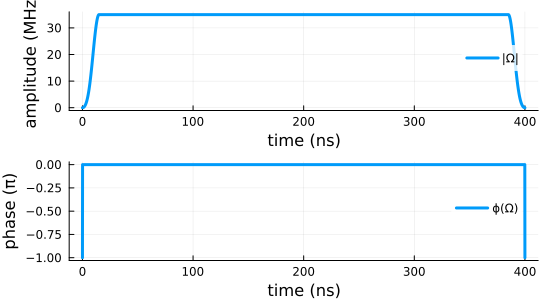
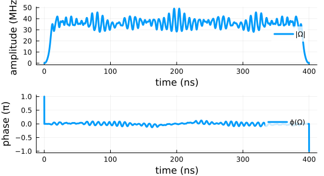
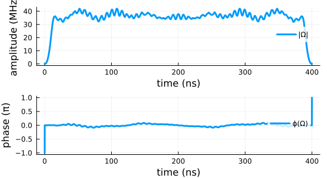

Entangling quantum gates for coupled transmon qubits
$\gdef\Op#1{\hat{#1}}$ $\gdef\op#1{\hat{#1}}$ $\gdef\init{\text{init}}$ $\gdef\tgt{\text{tgt}}$ $\gdef\Re{\operatorname{Re}}$ $\gdef\Im{\operatorname{Im}}$
datadir(names...) = joinpath(@__DIR__, names...);This example illustrates the optimization towards a perfectly entangling two-qubit gate for a system of two transmon qubits with a shared transmission line. It goes through three progressively more advanced optimizations:
- The direct optimization for a $\Op{O} = \sqrt{\text{iSWAP}}$ gate with a standard square-modulus functional
- The optimization towards a perfect entangler using the functional developed in Goerz et al., Phys. Rev. A 91, 062307 (2015) [1]
- The direct maximization of of the gate concurrence
While the first example evaluates the gradient of the optimization functional analytically, the latter two are examples for the use of automatic differentiation, or more specifically semi-automatic differentiation, as developed in Goerz et al. [2]. The optimization of the gate concurrence specifically illustrates the optimization of a functional that is inherently non-analytical.
Hamiltonian and guess pulses
We will write the Hamiltonian in units of GHz (angular frequency; the factor 2π is implicit) and ns:
const GHz = 2π
const MHz = 0.001GHz
const ns = 1.0
const μs = 1000ns;The Hamiltonian and parameters are taken from Ref. [1, Table 1].
⊗ = kron
const ùïö = 1im
const N = 6 # levels per transmon
using LinearAlgebra
using SparseArrays
using QuantumControl
function transmon_hamiltonian(;
Ωre,
Ωim,
N=N, # levels per transmon
ω₁=4.380GHz,
ω₂=4.614GHz,
ωd=4.498GHz,
α₁=-210MHz,
α₂=-215MHz,
J=-3MHz,
λ=1.03,
use_sparse=:auto
)
ùüô = SparseMatrixCSC{ComplexF64,Int64}(sparse(I, N, N))
b̂₁ = spdiagm(1 => complex.(sqrt.(collect(1:N-1)))) ⊗ ùüô
b̂₂ = ùüô ⊗ spdiagm(1 => complex.(sqrt.(collect(1:N-1))))
b̂₁⁺ = sparse(b̂₁')
b̂₂⁺ = sparse(b̂₂')
n̂₁ = sparse(b̂₁' * b̂₁)
n̂₂ = sparse(b̂₂' * b̂₂)
n̂₁² = sparse(n̂₁ * n̂₁)
n̂₂² = sparse(n̂₂ * n̂₂)
b̂₁⁺_b̂₂ = sparse(b̂₁' * b̂₂)
b̂₁_b̂₂⁺ = sparse(b̂₁ * b̂₂')
ω̃₁ = ω₁ - ωd
ω̃₂ = ω₂ - ωd
Ĥ₀ = sparse(
(ω̃₁ - α₁ / 2) * n̂₁ +
(α₁ / 2) * n̂₁² +
(ω̃₂ - α₂ / 2) * n̂₂ +
(α₂ / 2) * n̂₂² +
J * (b̂₁⁺_b̂₂ + b̂₁_b̂₂⁺)
)
Ĥ₁re = (1 / 2) * (b̂₁ + b̂₁⁺ + λ * b̂₂ + λ * b̂₂⁺)
Ĥ₁im = (ùïö / 2) * (bÃÇ‚ÇÅ‚Å∫ - b̂₁ + Œª * bÃÇ‚ÇÇ‚Å∫ - Œª * b̂₂)
if ((N < 5) && (use_sparse ≢ true)) || use_sparse ≡ false
H = hamiltonian(Array(Ĥ₀), (Array(Ĥ₁re), Ωre), (Array(Ĥ₁im), Ωim))
else
H = hamiltonian(Ĥ₀, (Ĥ₁re, Ωre), (Ĥ₁im, Ωim))
end
return H
end;We choose a pulse duration of 400 ns. The guess pulse amplitude is 35 MHz, with a 15 ns switch-on/-off time. This switch-on/-off must be maintained in the optimization: A pulse that does not start from or end at zero would not be physical. For GRAPE, we can achieve this by using a ShapedAmplitude:
using QuantumControl.Amplitudes: ShapedAmplitudeThis allows to have a control amplitude $Ω(t) = S(t) ϵ(t)$ where $S(t)$ is a fixed shape and $ϵ(t)$ is the pulse directly tuned by the optimization. We start with a constant $ϵ(t)$ and do not place any restrictions on how the optimization might update $ϵ(t)$.
The Hamiltonian is written in a rotating frame, so in general, the control field is allowed to be complex-valued. We separate this into two control fields, one for the real part and one for the imaginary part. Initially, the imaginary part is zero, corresponding to a field exactly at the frequency of the rotating frame.
Note that passing tlist to ShapedAmplitude discretizes both the control and the shape function to the midpoints of the tlist array.
using QuantumControl.Shapes: flattop
function guess_amplitudes(; T=400ns, E₀=35MHz, dt=0.1ns, t_rise=15ns)
tlist = collect(range(0, T, step=dt))
shape(t) = flattop(t, T=T, t_rise=t_rise)
Ωre = ShapedAmplitude(t -> E₀, tlist; shape)
Ωim = ShapedAmplitude(t -> 0.0, tlist; shape)
return tlist, Ωre, Ωim
end
tlist, Ωre_guess, Ωim_guess = guess_amplitudes();We can visualize this:
using Plots
Plots.default(
linewidth = 3,
size = (550, 300),
legend = :right,
foreground_color_legend = nothing,
background_color_legend = RGBA(1, 1, 1, 0.8),
)
using QuantumControl.Controls: discretize
function plot_complex_pulse(tlist, Ω; time_unit=:ns, ampl_unit=:MHz, kwargs...)
Ω = discretize(Ω, tlist) # make sure Ω is defined on *points* of `tlist`
ax1 = plot(
tlist ./ eval(time_unit),
abs.(Ω) ./ eval(ampl_unit);
label="|Ω|",
xlabel="time ($time_unit)",
ylabel="amplitude ($ampl_unit)",
kwargs...
)
ax2 = plot(
tlist ./ eval(time_unit),
angle.(Ω) ./ π;
label="ϕ(Ω)",
xlabel="time ($time_unit)",
ylabel="phase (π)"
)
plot(ax1, ax2, layout=(2, 1))
end
fig = plot_complex_pulse(tlist, Array(Œ©re_guess) .+ ùïö .* Array(Œ©im_guess))
We now instantiate the Hamiltonian with these control fields:
H = transmon_hamiltonian(Ωre=Ωre_guess, Ωim=Ωim_guess)Generator with 3 ops and 2 amplitudes
ops::Vector{SparseArrays.SparseMatrixCSC{ComplexF64, Int64}}:
sparse([2, 7, 3, 8, 4, 9, 5, 10, 6, 11, 2, 7, 3, 8, 13, 4, 9, 14, 5, 10, 15, 6, 11, 16, 12, 17, 8, 13, 9, 14, 19, 10, 15, 20, 11, 16, 21, 12, 17, 22, 18, 23, 14, 19, 15, 20, 25, 16, 21, 26, 17, 22, 27, 18, 23, 28, 24, 29, 20, 25, 21, 26, 31, 22, 27, 32, 23, 28, 33, 24, 29, 34, 30, 35, 26, 31, 27, 32, 28, 33, 29, 34, 30, 35, 36], [2, 2, 3, 3, 4, 4, 5, 5, 6, 6, 7, 7, 8, 8, 8, 9, 9, 9, 10, 10, 10, 11, 11, 11, 12, 12, 13, 13, 14, 14, 14, 15, 15, 15, 16, 16, 16, 17, 17, 17, 18, 18, 19, 19, 20, 20, 20, 21, 21, 21, 22, 22, 22, 23, 23, 23, 24, 24, 25, 25, 26, 26, 26, 27, 27, 27, 28, 28, 28, 29, 29, 29, 30, 30, 31, 31, 32, 32, 33, 33, 34, 34, 35, 35, 36], ComplexF64[0.7288494956328294 + 0.0im, -0.01884955592153876 + 0.0im, 0.10681415022204677 + 0.0im, -0.026657297628950197 + 0.0im, -1.8661060362323445 + 0.0im, -0.03264838855621592 + 0.0im, -5.189911063730349 + 0.0im, -0.03769911184307752 + 0.0im, -9.864600932271973 + 0.0im, -0.04214888838624436 + 0.0im, -0.01884955592153876 + 0.0im, -0.7414158662471912 + 0.0im, -0.026657297628950197 + 0.0im, -0.012566370614361833 + 0.0im, -0.026657297628950197 + 0.0im, -0.03264838855621592 + 0.0im, -0.6346017160251445 + 0.0im, -0.037699111843077525 + 0.0im, -0.03769911184307752 + 0.0im, -2.6075219024795357 + 0.0im, -0.04617179388582711 + 0.0im, -0.04214888838624436 + 0.0im, -5.931326929977541 + 0.0im, -0.053314595257900395 + 0.0im, -10.606016798519164 + 0.0im, -0.05960752959477661 + 0.0im, -0.026657297628950197 + 0.0im, -2.802300647002097 + 0.0im, -0.037699111843077525 + 0.0im, -2.0734511513692677 + 0.0im, -0.03264838855621592 + 0.0im, -0.04617179388582711 + 0.0im, -2.6954864967800503 + 0.0im, -0.04617179388582711 + 0.0im, -0.053314595257900395 + 0.0im, -4.6684066832344415 + 0.0im, -0.05654866776461627 + 0.0im, -0.05960752959477661 + 0.0im, -7.992211710732446 + 0.0im, -0.06529677711243184 + 0.0im, -12.666901579274068 + 0.0im, -0.07300401616752501 + 0.0im, -0.03264838855621592 + 0.0im, -6.182654342264712 + 0.0im, -0.04617179388582711 + 0.0im, -5.453804846631882 + 0.0im, -0.03769911184307752 + 0.0im, -0.05654866776461627 + 0.0im, -6.075840192042666 + 0.0im, -0.053314595257900395 + 0.0im, -0.06529677711243184 + 0.0im, -8.048760378497057 + 0.0im, -0.06529677711243184 + 0.0im, -0.07300401616752501 + 0.0im, -11.372565405995061 + 0.0im, -0.07539822368615504 + 0.0im, -16.047255274536685 + 0.0im, -0.08429777677248872 + 0.0im, -0.03769911184307752 + 0.0im, -10.882476952035045 + 0.0im, -0.053314595257900395 + 0.0im, -10.153627456402216 + 0.0im, -0.04214888838624436 + 0.0im, -0.06529677711243184 + 0.0im, -10.775662801812999 + 0.0im, -0.05960752959477661 + 0.0im, -0.07539822368615504 + 0.0im, -12.74858298826739 + 0.0im, -0.07300401616752501 + 0.0im, -0.08429777677248872 + 0.0im, -16.072388015765394 + 0.0im, -0.08429777677248872 + 0.0im, -20.747077884307018 + 0.0im, -0.09424777960769382 + 0.0im, -0.04214888838624436 + 0.0im, -16.901768476313094 + 0.0im, -0.05960752959477661 + 0.0im, -16.172918980680265 + 0.0im, -0.07300401616752501 + 0.0im, -16.794954326091048 + 0.0im, -0.08429777677248872 + 0.0im, -18.76787451254544 + 0.0im, -0.09424777960769382 + 0.0im, -22.091679540043444 + 0.0im, -26.766369408585067 + 0.0im], 36, 36)
sparse([2, 7, 1, 3, 8, 2, 4, 9, 3, 5, 10, 4, 6, 11, 5, 12, 1, 8, 13, 2, 7, 9, 14, 3, 8, 10, 15, 4, 9, 11, 16, 5, 10, 12, 17, 6, 11, 18, 7, 14, 19, 8, 13, 15, 20, 9, 14, 16, 21, 10, 15, 17, 22, 11, 16, 18, 23, 12, 17, 24, 13, 20, 25, 14, 19, 21, 26, 15, 20, 22, 27, 16, 21, 23, 28, 17, 22, 24, 29, 18, 23, 30, 19, 26, 31, 20, 25, 27, 32, 21, 26, 28, 33, 22, 27, 29, 34, 23, 28, 30, 35, 24, 29, 36, 25, 32, 26, 31, 33, 27, 32, 34, 28, 33, 35, 29, 34, 36, 30, 35], [1, 1, 2, 2, 2, 3, 3, 3, 4, 4, 4, 5, 5, 5, 6, 6, 7, 7, 7, 8, 8, 8, 8, 9, 9, 9, 9, 10, 10, 10, 10, 11, 11, 11, 11, 12, 12, 12, 13, 13, 13, 14, 14, 14, 14, 15, 15, 15, 15, 16, 16, 16, 16, 17, 17, 17, 17, 18, 18, 18, 19, 19, 19, 20, 20, 20, 20, 21, 21, 21, 21, 22, 22, 22, 22, 23, 23, 23, 23, 24, 24, 24, 25, 25, 25, 26, 26, 26, 26, 27, 27, 27, 27, 28, 28, 28, 28, 29, 29, 29, 29, 30, 30, 30, 31, 31, 32, 32, 32, 33, 33, 33, 34, 34, 34, 35, 35, 35, 36, 36], ComplexF64[0.515 + 0.0im, 0.5 + 0.0im, 0.515 + 0.0im, 0.728319984622144 + 0.0im, 0.5 + 0.0im, 0.728319984622144 + 0.0im, 0.8920061658979718 + 0.0im, 0.5 + 0.0im, 0.8920061658979718 + 0.0im, 1.03 + 0.0im, 0.5 + 0.0im, 1.03 + 0.0im, 1.1515750084123917 + 0.0im, 0.5 + 0.0im, 1.1515750084123917 + 0.0im, 0.5 + 0.0im, 0.5 + 0.0im, 0.515 + 0.0im, 0.7071067811865476 + 0.0im, 0.5 + 0.0im, 0.515 + 0.0im, 0.728319984622144 + 0.0im, 0.7071067811865476 + 0.0im, 0.5 + 0.0im, 0.728319984622144 + 0.0im, 0.8920061658979718 + 0.0im, 0.7071067811865476 + 0.0im, 0.5 + 0.0im, 0.8920061658979718 + 0.0im, 1.03 + 0.0im, 0.7071067811865476 + 0.0im, 0.5 + 0.0im, 1.03 + 0.0im, 1.1515750084123917 + 0.0im, 0.7071067811865476 + 0.0im, 0.5 + 0.0im, 1.1515750084123917 + 0.0im, 0.7071067811865476 + 0.0im, 0.7071067811865476 + 0.0im, 0.515 + 0.0im, 0.8660254037844386 + 0.0im, 0.7071067811865476 + 0.0im, 0.515 + 0.0im, 0.728319984622144 + 0.0im, 0.8660254037844386 + 0.0im, 0.7071067811865476 + 0.0im, 0.728319984622144 + 0.0im, 0.8920061658979718 + 0.0im, 0.8660254037844386 + 0.0im, 0.7071067811865476 + 0.0im, 0.8920061658979718 + 0.0im, 1.03 + 0.0im, 0.8660254037844386 + 0.0im, 0.7071067811865476 + 0.0im, 1.03 + 0.0im, 1.1515750084123917 + 0.0im, 0.8660254037844386 + 0.0im, 0.7071067811865476 + 0.0im, 1.1515750084123917 + 0.0im, 0.8660254037844386 + 0.0im, 0.8660254037844386 + 0.0im, 0.515 + 0.0im, 1.0 + 0.0im, 0.8660254037844386 + 0.0im, 0.515 + 0.0im, 0.728319984622144 + 0.0im, 1.0 + 0.0im, 0.8660254037844386 + 0.0im, 0.728319984622144 + 0.0im, 0.8920061658979718 + 0.0im, 1.0 + 0.0im, 0.8660254037844386 + 0.0im, 0.8920061658979718 + 0.0im, 1.03 + 0.0im, 1.0 + 0.0im, 0.8660254037844386 + 0.0im, 1.03 + 0.0im, 1.1515750084123917 + 0.0im, 1.0 + 0.0im, 0.8660254037844386 + 0.0im, 1.1515750084123917 + 0.0im, 1.0 + 0.0im, 1.0 + 0.0im, 0.515 + 0.0im, 1.118033988749895 + 0.0im, 1.0 + 0.0im, 0.515 + 0.0im, 0.728319984622144 + 0.0im, 1.118033988749895 + 0.0im, 1.0 + 0.0im, 0.728319984622144 + 0.0im, 0.8920061658979718 + 0.0im, 1.118033988749895 + 0.0im, 1.0 + 0.0im, 0.8920061658979718 + 0.0im, 1.03 + 0.0im, 1.118033988749895 + 0.0im, 1.0 + 0.0im, 1.03 + 0.0im, 1.1515750084123917 + 0.0im, 1.118033988749895 + 0.0im, 1.0 + 0.0im, 1.1515750084123917 + 0.0im, 1.118033988749895 + 0.0im, 1.118033988749895 + 0.0im, 0.515 + 0.0im, 1.118033988749895 + 0.0im, 0.515 + 0.0im, 0.728319984622144 + 0.0im, 1.118033988749895 + 0.0im, 0.728319984622144 + 0.0im, 0.8920061658979718 + 0.0im, 1.118033988749895 + 0.0im, 0.8920061658979718 + 0.0im, 1.03 + 0.0im, 1.118033988749895 + 0.0im, 1.03 + 0.0im, 1.1515750084123917 + 0.0im, 1.118033988749895 + 0.0im, 1.1515750084123917 + 0.0im], 36, 36)
sparse([2, 7, 1, 3, 8, 2, 4, 9, 3, 5, 10, 4, 6, 11, 5, 12, 1, 8, 13, 2, 7, 9, 14, 3, 8, 10, 15, 4, 9, 11, 16, 5, 10, 12, 17, 6, 11, 18, 7, 14, 19, 8, 13, 15, 20, 9, 14, 16, 21, 10, 15, 17, 22, 11, 16, 18, 23, 12, 17, 24, 13, 20, 25, 14, 19, 21, 26, 15, 20, 22, 27, 16, 21, 23, 28, 17, 22, 24, 29, 18, 23, 30, 19, 26, 31, 20, 25, 27, 32, 21, 26, 28, 33, 22, 27, 29, 34, 23, 28, 30, 35, 24, 29, 36, 25, 32, 26, 31, 33, 27, 32, 34, 28, 33, 35, 29, 34, 36, 30, 35], [1, 1, 2, 2, 2, 3, 3, 3, 4, 4, 4, 5, 5, 5, 6, 6, 7, 7, 7, 8, 8, 8, 8, 9, 9, 9, 9, 10, 10, 10, 10, 11, 11, 11, 11, 12, 12, 12, 13, 13, 13, 14, 14, 14, 14, 15, 15, 15, 15, 16, 16, 16, 16, 17, 17, 17, 17, 18, 18, 18, 19, 19, 19, 20, 20, 20, 20, 21, 21, 21, 21, 22, 22, 22, 22, 23, 23, 23, 23, 24, 24, 24, 25, 25, 25, 26, 26, 26, 26, 27, 27, 27, 27, 28, 28, 28, 28, 29, 29, 29, 29, 30, 30, 30, 31, 31, 32, 32, 32, 33, 33, 33, 34, 34, 34, 35, 35, 35, 36, 36], ComplexF64[0.0 + 0.515im, 0.0 + 0.5im, -0.0 - 0.515im, 0.0 + 0.728319984622144im, 0.0 + 0.5im, -0.0 - 0.728319984622144im, 0.0 + 0.8920061658979718im, 0.0 + 0.5im, -0.0 - 0.8920061658979718im, 0.0 + 1.03im, 0.0 + 0.5im, -0.0 - 1.03im, 0.0 + 1.1515750084123917im, 0.0 + 0.5im, -0.0 - 1.1515750084123917im, 0.0 + 0.5im, -0.0 - 0.5im, 0.0 + 0.515im, 0.0 + 0.7071067811865476im, -0.0 - 0.5im, -0.0 - 0.515im, 0.0 + 0.728319984622144im, 0.0 + 0.7071067811865476im, -0.0 - 0.5im, -0.0 - 0.728319984622144im, 0.0 + 0.8920061658979718im, 0.0 + 0.7071067811865476im, -0.0 - 0.5im, -0.0 - 0.8920061658979718im, 0.0 + 1.03im, 0.0 + 0.7071067811865476im, -0.0 - 0.5im, -0.0 - 1.03im, 0.0 + 1.1515750084123917im, 0.0 + 0.7071067811865476im, -0.0 - 0.5im, -0.0 - 1.1515750084123917im, 0.0 + 0.7071067811865476im, -0.0 - 0.7071067811865476im, 0.0 + 0.515im, 0.0 + 0.8660254037844386im, -0.0 - 0.7071067811865476im, -0.0 - 0.515im, 0.0 + 0.728319984622144im, 0.0 + 0.8660254037844386im, -0.0 - 0.7071067811865476im, -0.0 - 0.728319984622144im, 0.0 + 0.8920061658979718im, 0.0 + 0.8660254037844386im, -0.0 - 0.7071067811865476im, -0.0 - 0.8920061658979718im, 0.0 + 1.03im, 0.0 + 0.8660254037844386im, -0.0 - 0.7071067811865476im, -0.0 - 1.03im, 0.0 + 1.1515750084123917im, 0.0 + 0.8660254037844386im, -0.0 - 0.7071067811865476im, -0.0 - 1.1515750084123917im, 0.0 + 0.8660254037844386im, -0.0 - 0.8660254037844386im, 0.0 + 0.515im, 0.0 + 1.0im, -0.0 - 0.8660254037844386im, -0.0 - 0.515im, 0.0 + 0.728319984622144im, 0.0 + 1.0im, -0.0 - 0.8660254037844386im, -0.0 - 0.728319984622144im, 0.0 + 0.8920061658979718im, 0.0 + 1.0im, -0.0 - 0.8660254037844386im, -0.0 - 0.8920061658979718im, 0.0 + 1.03im, 0.0 + 1.0im, -0.0 - 0.8660254037844386im, -0.0 - 1.03im, 0.0 + 1.1515750084123917im, 0.0 + 1.0im, -0.0 - 0.8660254037844386im, -0.0 - 1.1515750084123917im, 0.0 + 1.0im, -0.0 - 1.0im, 0.0 + 0.515im, 0.0 + 1.118033988749895im, -0.0 - 1.0im, -0.0 - 0.515im, 0.0 + 0.728319984622144im, 0.0 + 1.118033988749895im, -0.0 - 1.0im, -0.0 - 0.728319984622144im, 0.0 + 0.8920061658979718im, 0.0 + 1.118033988749895im, -0.0 - 1.0im, -0.0 - 0.8920061658979718im, 0.0 + 1.03im, 0.0 + 1.118033988749895im, -0.0 - 1.0im, -0.0 - 1.03im, 0.0 + 1.1515750084123917im, 0.0 + 1.118033988749895im, -0.0 - 1.0im, -0.0 - 1.1515750084123917im, 0.0 + 1.118033988749895im, -0.0 - 1.118033988749895im, 0.0 + 0.515im, -0.0 - 1.118033988749895im, -0.0 - 0.515im, 0.0 + 0.728319984622144im, -0.0 - 1.118033988749895im, -0.0 - 0.728319984622144im, 0.0 + 0.8920061658979718im, -0.0 - 1.118033988749895im, -0.0 - 0.8920061658979718im, 0.0 + 1.03im, -0.0 - 1.118033988749895im, -0.0 - 1.03im, 0.0 + 1.1515750084123917im, -0.0 - 1.118033988749895im, -0.0 - 1.1515750084123917im], 36, 36)
amplitudes::Vector{QuantumPropagators.Amplitudes.ShapedPulseAmplitude}:
ShapedAmplitude(::Vector{Float64}; shape::Vector{Float64})
ShapedAmplitude(::Vector{Float64}; shape::Vector{Float64})
Logical basis for two-qubit gates
For simplicity, we will be define the qubits in the bare basis, i.e. ignoring the static coupling $J$.
function ket(i::Int64; N=N)
Ψ = zeros(ComplexF64, N)
Ψ[i+1] = 1
return Ψ
end
function ket(indices::Int64...; N=N)
Ψ = ket(indices[1]; N=N)
for i in indices[2:end]
Ψ = Ψ ⊗ ket(i; N=N)
end
return Ψ
end
function ket(label::AbstractString; N=N)
indices = [parse(Int64, digit) for digit in label]
return ket(indices...; N=N)
end;basis = [ket("00"), ket("01"), ket("10"), ket("11")];Optimizing for a specific quantum gate
Our target gate is $\Op{O} = \sqrt{\text{iSWAP}}$:
SQRTISWAP = [
1 0 0 0
0 1/√2 ùïö/√2 0
0 ùïö/√2 1/√2 0
0 0 0 1
];For each basis state, we get a target state that results from applying the gate to the basis state (you can convince yourself that this equivalent multiplying the transpose of the above gate matrix to the vector of basis states):
basis_tgt = transpose(SQRTISWAP) * basis;The optimization aims to bring the dynamic trajectory of each basis state to the corresponding target state:
trajectories = [
Trajectory(initial_state=Ψ, target_state=Ψtgt, generator=H) for
(Ψ, Ψtgt) ∈ zip(basis, basis_tgt)
];We can analyze how all of the basis states evolve under the guess controls in one go:
using QuantumPropagators: Cheby
guess_states = propagate_trajectories(trajectories, tlist; method=Cheby, use_threads=true);The gate implemented by the guess controls is
U_guess = [basis[i] ⋅ guess_states[j] for i = 1:4, j = 1:4];We will optimize these trajectories with a square-modulus functional
using QuantumControl.Functionals: J_T_smThe initial value of the functional is
J_T_sm(guess_states, trajectories)0.915637251098997which is the gate error
1 - (abs(tr(U_guess' * SQRTISWAP)) / 4)^20.915637251098997Now, we define the full optimization problems on top of the list of trajectories, and with the optimization functional:
problem = ControlProblem(
trajectories,
tlist;
iter_stop=100,
J_T=J_T_sm,
check_convergence=res -> begin
(
(res.J_T > res.J_T_prev) &&
(res.converged = true) &&
(res.message = "Loss of monotonic convergence")
)
((res.J_T <= 1e-3) && (res.converged = true) && (res.message = "J_T < 10⁻³"))
end,
prop_method=Cheby,
use_threads=true,
);using GRAPE
opt_result = @optimize_or_load(datadir("GRAPE_GATE_OCT.jld2"), problem; method=GRAPE);[ Info: Set callback to store result in /net/storage/mgoerz/QuantumControlExamples.jl/examples/perfect_entanglers/GRAPE_GATE_OCT.jld2 on unexpected exit.
iter. J_T |∇J_T| ΔJ_T FG(F) secs
0 9.16e-01 1.41e-01 n/a 1(0) 5.3
1 8.94e-01 2.36e-01 -2.19e-02 1(0) 0.4
2 8.85e-01 6.54e-01 -8.30e-03 1(0) 0.3
3 8.52e-01 4.18e-01 -3.35e-02 1(0) 0.3
4 7.97e-01 9.12e-01 -5.47e-02 1(0) 0.3
5 5.81e-01 1.15e+00 -2.16e-01 2(0) 0.6
6 4.49e-01 6.34e-01 -1.32e-01 2(0) 0.6
7 4.27e-01 4.43e-01 -2.16e-02 2(0) 0.5
8 3.97e-01 4.53e-01 -3.06e-02 1(0) 0.3
9 2.82e-01 1.28e+00 -1.15e-01 1(0) 0.3
10 1.96e-01 6.70e-01 -8.51e-02 1(0) 0.3
11 1.83e-01 8.17e-01 -1.31e-02 1(0) 0.3
12 1.61e-01 3.98e-01 -2.23e-02 1(0) 0.3
13 1.53e-01 2.25e-01 -7.98e-03 1(0) 0.3
14 1.42e-01 2.21e-0…
21 4.14e-02 1.76e-01 -5.42e-03 1(0) 0.3
22 3.60e-02 2.23e-01 -5.39e-03 1(0) 0.3
23 2.70e-02 2.05e-01 -9.05e-03 1(0) 0.4
24 2.38e-02 2.15e-01 -3.19e-03 2(0) 0.7
25 1.99e-02 1.01e-01 -3.86e-03 1(0) 0.3
26 1.78e-02 9.93e-02 -2.16e-03 1(0) 0.3
27 1.51e-02 1.25e-01 -2.66e-03 1(0) 0.3
28 1.24e-02 1.62e-01 -2.66e-03 1(0) 0.3
29 9.81e-03 7.46e-02 -2.63e-03 1(0) 0.3
30 8.35e-03 7.98e-02 -1.47e-03 1(0) 0.3
31 6.36e-03 1.04e-01 -1.99e-03 1(0) 0.3
32 4.78e-03 1.66e-01 -1.58e-03 1(0) 0.3
33 3.55e-03 8.87e-02 -1.24e-03 1(0) 0.3
34 2.85e-03 5.84e-02 -6.97e-04 1(0) 0.3
35 2.27e-03 6.32e-02 -5.82e-04 1(0) 0.3
36 1.91e-03 5.91e-02 -3.57e-04 1(0) 0.3
37 1.24e-03 4.89e-02 -6.69e-04 1(0) 0.3
38 7.00e-04 5.03e-02 -5.41e-04 1(0) 0.3
opt_resultGRAPE Optimization Result
-------------------------
- Started at 2024-01-23T19:33:57.027
- Number of trajectories: 4
- Number of iterations: 38
- Number of pure func evals: 0
- Number of func/grad evals: 43
- Value of functional: 6.99924e-04
- Reason for termination: J_T < 10⁻³
- Ended at 2024-01-23T19:34:14.478 (17 seconds, 451 milliseconds)
We extract the optimized control field from the optimization result and plot the resulting amplitude.
The optimized_controls field of the opt_results contains the optimized controls $ϵ(t)$.
œµ_opt = opt_result.optimized_controls[1] + ùïö * opt_result.optimized_controls[2];These must still be multiplied by the static shape $S(t)$ that we set up for the guess amplitudes
Ω_opt = ϵ_opt .* discretize(Ωre_guess.shape, tlist)
fig = plot_complex_pulse(tlist, Ω_opt)
We then propagate the optimized control field to analyze the resulting quantum gate:
using QuantumControl.Controls: get_controls, substitute
opt_states = propagate_trajectories(
substitute(
trajectories,
IdDict(zip(get_controls(trajectories), opt_result.optimized_controls))
),
tlist;
method=Cheby,
use_threads=true
);The resulting gate is
U_opt = [basis[i] ⋅ opt_states[j] for i = 1:4, j = 1:4];and we can verify the resulting fidelity
(abs(tr(U_opt' * SQRTISWAP)) / 4)^20.9993000761444893Optimizing for a general perfect entangler
We define the optimization with one trajectory for each of the four basis states:
trajectories = [Trajectory(; initial_state=Ψ, generator=H) for Ψ ∈ basis];Note that we omit the target_state here. This is because we will be optimizing for an arbitrary perfect entangler, not for a specific quantum gate. Thus, there is no a-priori known target state to which the initial state must evolve.
The optimization is steered by the perfect entanglers distance measure $D_{PE}$, that is, the geometric distance of the quantum gate obtained from propagating the four basis states to the polyhedron of perfect entanglers in the Weyl chamber. Since the logical subspace defining the qubit is embedded in the larger Hilbert space of the transmon, there may be loss of population from the logical subspace. To counter this possibility in the optimization, we add a unitarity measure to $D_{PE}$. The two terms are added with equal weight.
using TwoQubitWeylChamber: D_PE, gate_concurrence, unitarity
using QuantumControl.Functionals: gate_functional
J_T_PE = gate_functional(D_PE; unitarity_weight=0.5);The gate_functional routines used above converts the function D_PE that receives the gate $UÃÇ$ as a 4√ó4 matrix into a functional of the correct from for the QuantumControl.optimize routine, which is a function of the propagated states.
We can check that for the guess pulse, we are not implementing a perfect entangler
gate_concurrence(U_guess)0.7773116198523763We find that the guess pulse produces a gate in the W0* region of the Weyl chamber:
using TwoQubitWeylChamber: weyl_chamber_region
weyl_chamber_region(U_guess)"W0*"That is, the region of the Weyl chamber containing controlled-phase gates with a phase $> π$ (Weyl chamber coordinates $c₁ > π/2$, $c₂ < π/4$).
This in fact allows use to use the perfect entangler functional without modification: if the guess pulse were in the "W1" region of the Weyl chamber, (close to SWAP), we would have to flip its sign, or we would optimize towards the local equivalence class of the SWAP gate instead of towards the perfect of perfect entanglers. In principle, we could use a modified functional that takes the absolute square of the D_PE term, by using
J_T_PE = gate_functional(D_PE; unitarity_weight=0.5, absolute_square=true)This would specifically optimize for the surface of the perfect entanglers functional.
The guess pulse loses about 10% of population from the logical subspace:
1 - unitarity(U_guess)0.09071664593745976We can also evaluate the geometric distance to the polyhedron of perfect entanglers in the Weyl chamber:
D_PE(U_guess)0.7787454222357695Together with the unitarity measure, this is the initial value of the optimization functional:
0.5 * D_PE(U_guess) + 0.5 * (1 - unitarity(U_guess))0.4347310340866146J_T_PE(guess_states, trajectories)0.4347310340866146For the standard functional J_T_sm used in the previous section, our GRAPE was able to automatically use an analytic implementation of the gradient. For the perfect-entanglers functional, an analytic gradient exist, but is very cumbersome to implement. Instead, we make use of semi-automatic differentiation. As shown in Goerz et al., arXiv:2205.15044, by evaluating the gradient via a chain rule in the propagated states, the dependency of the gradient on the final time functional is pushed into the boundary condition for the backward propagation, $|χ_k⟩ = -∂J_T/∂⟨ϕ_k|$. We can further exploit that J_T is an explicit function of the two-qubit gate in the computational basis and use a chain rule with respect to the elements of the two-qubit gate $U_{kk'}$. The remaining derivatives $∂J_T/∂U_{kk'}$ are then obtained via automatic differentiation. This is set up via the make_gate_chi function,
using Zygote
QuantumControl.set_default_ad_framework(Zygote)
using QuantumControl.Functionals: make_gate_chi
chi_pe = make_gate_chi(D_PE, trajectories; unitarity_weight=0.5);[ Info: QuantumControl: Setting Zygote as the default provider for automatic differentiation. This determines the default `automatic` setting for `QuantumControl.Functionals.make_chi`, `QuantumControl.Functionals.make_gate_chi`, and `QuantumControl.Functionals.make_grad_J_a`
[ Info: make_gate_chi for J_T_U=D_PE: automatic with Zygote
where the resulting chi_pe must be passed to the optimization.
Now, we formulate the full control problem
problem = ControlProblem(
trajectories,
tlist;
iter_stop=100,
prop_method=Cheby,
J_T=J_T_PE,
chi=chi_pe,
check_convergence=res -> begin
(
(res.J_T > res.J_T_prev) &&
(res.converged = true) &&
(res.message = "Loss of monotonic convergence")
)
(
(res.J_T <= 1e-3) &&
(res.converged = true) &&
(res.message = "Found a perfect entangler")
)
end,
use_threads=true,
);With this, we can easily find a solution to the control problem:
opt_result = @optimize_or_load(datadir("GRAPE_PE_OCT.jld2"), problem; method=GRAPE);[ Info: Set callback to store result in /net/storage/mgoerz/QuantumControlExamples.jl/examples/perfect_entanglers/GRAPE_PE_OCT.jld2 on unexpected exit.
iter. J_T |∇J_T| ΔJ_T FG(F) secs
0 4.35e-01 3.92e-01 n/a 1(0) 1.7
1 3.35e-01 7.52e-01 -9.94e-02 1(0) 0.4
2 1.69e-01 3.19e-01 -1.67e-01 1(0) 0.4
3 1.43e-01 2.09e-01 -2.59e-02 1(0) 0.4
4 1.00e-01 2.24e-01 -4.24e-02 1(0) 0.3
5 5.72e-02 2.60e-01 -4.33e-02 2(0) 0.7
6 4.96e-02 5.41e-01 -7.51e-03 1(0) 0.3
7 7.82e-03 1.82e-01 -4.18e-02 1(0) 0.3
8 -4.26e-03 1.13e-01 -1.21e-02 1(0) 0.3
opt_resultGRAPE Optimization Result
-------------------------
- Started at 2024-01-23T19:34:34.880
- Number of trajectories: 4
- Number of iterations: 8
- Number of pure func evals: 0
- Number of func/grad evals: 10
- Value of functional: -4.25769e-03
- Reason for termination: Found a perfect entangler
- Ended at 2024-01-23T19:34:39.780 (4 seconds, 900 milliseconds)
We extract the optimized control field from the optimization result and plot it
œµ_opt = opt_result.optimized_controls[1] + ùïö * opt_result.optimized_controls[2]
Ω_opt = ϵ_opt .* discretize(Ωre_guess.shape, tlist)
fig = plot_complex_pulse(tlist, Ω_opt)
We then propagate the optimized control field to analyze the resulting quantum gate:
opt_states = propagate_trajectories(
substitute(
trajectories,
IdDict(zip(get_controls(trajectories), opt_result.optimized_controls))
),
tlist;
method=Cheby,
use_threads=true
);
U_opt = [basis[i] ⋅ opt_states[j] for i = 1:4, j = 1:4];We find that we have achieved a perfect entangler:
gate_concurrence(U_opt)1.0Moreover, we have reduced the population loss to less than 4%
1 - unitarity(U_opt)0.03526169455870842Direct maximization of the gate concurrence
In the previous optimizations, we have optimized for a perfect entangler indirectly via a geometric function in the Weyl chamber. The entire reason that perfect entangler functional was formulated is because calculating the gate concurrence directly involves the eigenvalues of the unitary, see Kraus and Cirac [3] and Childs et al. [4], which are inherently non-analytic.
However, since we are able to obtain gradient from automatic differentiation, this is no longer an insurmountable obstacle
We can define a functional for a given gate U that combines the gate concurrence and (as above) a unitarity measure to penalize loss of population from the logical subspace:
J_T_C(U) = 0.5 * (1 - gate_concurrence(U)) + 0.5 * (1 - unitarity(U));In the optimization, we will convert this functional to one that takes the propagated states as arguments (via the gate_functional routine). Also, as before, we have to create a matching routine for the boundary condition $|χ_k⟩ = -\frac{∂}{∂⟨ϕ_k|} J_T$ of the backward-propagation via the make_gate_chi routine.
Running this, we again are able to find a perfect entangler.
opt_result_direct = @optimize_or_load(
datadir("GRAPE_PE_OCT_direct.jld2"),
problem;
method=GRAPE,
J_T=gate_functional(J_T_C),
chi=make_gate_chi(J_T_C, trajectories)
);[ Info: make_gate_chi for J_T_U=J_T_C: automatic with Zygote
[ Info: Set callback to store result in /net/storage/mgoerz/QuantumControlExamples.jl/examples/perfect_entanglers/GRAPE_PE_OCT_direct.jld2 on unexpected exit.
iter. J_T |∇J_T| ΔJ_T FG(F) secs
0 1.57e-01 1.42e-01 n/a 1(0) 0.9
1 1.46e-01 3.18e-01 -1.05e-02 1(0) 0.5
2 1.30e-01 2.86e-01 -1.61e-02 1(0) 0.5
3 8.10e-02 2.10e-01 -4.91e-02 2(0) 1.1
4 7.66e-02 3.79e-01 -4.41e-03 1(0) 0.4
5 4.89e-02 1.87e-01 -2.77e-02 1(0) 0.4
6 2.64e-02 2.11e-01 -2.25e-02 1(0) 0.5
7 7.54e-03 1.09e-01 -1.89e-02 1(0) 0.6
8 5.86e-03 1.98e-01 -1.68e-03 1(0) 0.8
9 3.00e-03 4.01e-02 -2.87e-03 1(0) 0.6
10 2.71e-03 2.72e-02 -2.88e-04 1(0) 0.6
11 2.21e-03 2.82e-02 -5.01e-04 1(0) 0.6
12 1.42e-03 2.46e-02 -7.84e-04 1(0) 0.6
13 3.24e-04 2.83e-02 -1.10e-03 1(0) 0.7
opt_result_directGRAPE Optimization Result
-------------------------
- Started at 2024-01-23T19:34:51.944
- Number of trajectories: 4
- Number of iterations: 13
- Number of pure func evals: 0
- Number of func/grad evals: 15
- Value of functional: 3.24322e-04
- Reason for termination: Found a perfect entangler
- Ended at 2024-01-23T19:35:00.814 (8 seconds, 870 milliseconds)
opt_states_direct = propagate_trajectories(
substitute(
trajectories,
IdDict(zip(get_controls(trajectories), opt_result_direct.optimized_controls))
),
tlist;
method=Cheby,
use_threads=true
);
U_opt_direct = [basis[i] ⋅ opt_states_direct[j] for i = 1:4, j = 1:4];gate_concurrence(U_opt_direct)1.01 - unitarity(U_opt_direct)0.0006486436924157957